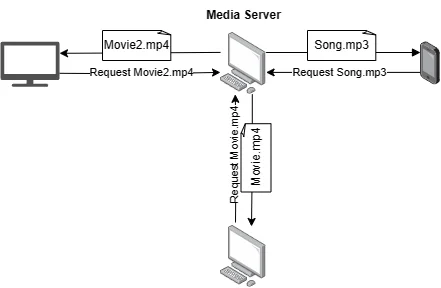
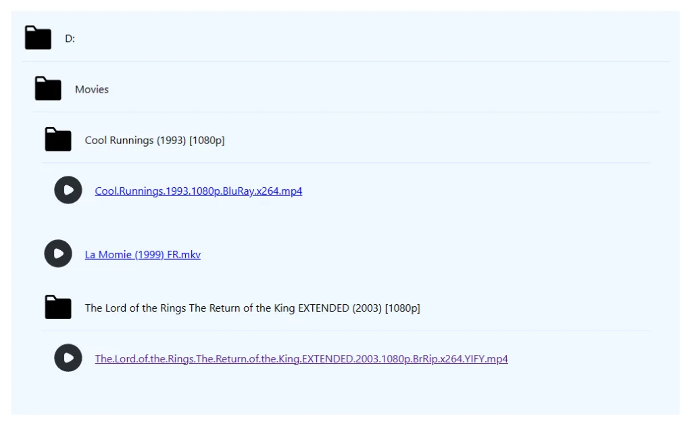
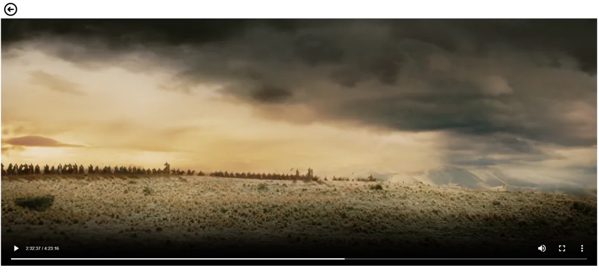

I like to watch movies on a big screen. And since my hometown lacks a cinema, that big screen is
generally my Smart TV.
However, moving my movies around on a USB stick quickly becomes tiring. Surely there is a better way?
And yes there is one: Media Servers.
In short: A media server is an application that stores and streams media content such as videos,
music, and photos to other devices on a network as long as these devices have an internet browser.

Some popular Media Servers include Plex, Kodi, and Universal Media Server…
While the concept may seem straightforward, these applications face several challenges. From a
non-expert standpoint, I’d wager that video encoding, compatibility, and performance can pose
difficulties.
To better understand how a media server works, I built a very simple one that I will improve over
time as the needs arise. Behold Palantir Media Server!
– ‘…What is it about – the seven stars and seven stones?’ – ‘About the palantiri
of the Kings of Old,’ said Gandalf. – ‘And what are they?’ – ‘The name meant
that which looks far away…‘
— The Lord of the Rings, Book III, Chapter
X: The Palantir
Tools used
Backend: Since performance is an issue, it’s safe to say that Python was not an
option. I felt quite adventurous, so I settled for Rust and its web framework
Actix Web. I wanted to learn this language for some time and it was the
occasion to do so.
Frontend: I am not a “JS library by default” guy, when an interface doesn’t
have to be dynamic, I like to settle with good old HTML+CSS and some vanilla JS if needed.
However, I think this application would be better as a Single Page Application so I used good
ol’ React.
Functionalities
Currently, the application is pretty straightforward. The user selects the directories containing the
media files they wish to share. They then start the server on the desired host and port, making
these media files accessible via the web interface. This is quite basic but it gets the job done as
a start.


Possible upgrades
Adding subtitle support for videos.
Resolving compatibility issues: Right now the program serves the files as they
are. However, not all browsers support all formats. For example, my Microsoft Edge browser
cannot play videos encoded in x265.
Implementing user authentication for added security.
Revamping the interface with a more modern and visually appealing design.
While Palantir Media Server is still very far from being a complete solution. I really enjoyed making
it and unlike most of my side projects (and yours too don’t lie), I actually have a daily use for
it.